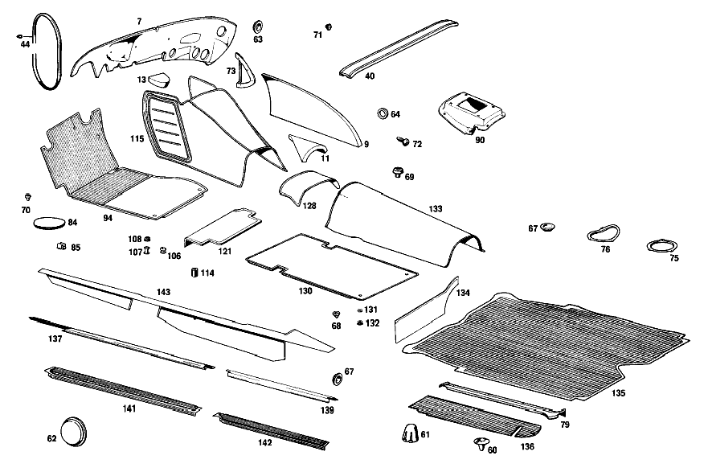

| № | Артикул | Название | Кол. | Примечание | Ограничение |
|---|---|---|---|---|---|
| 7 | A 108 682 05 26 | ШУМОИЗОЛЯЦИЯ | 1 | ||
| 40 | A 115 682 00 52 | ШУМОИЗОЛЯЦИЯ | - | ||
| 60 | A 111 997 12 81 | втулка | 2 | ||
| 61 | A 110 683 03 36 | ПАНЕЛЬ | 2 | ||
| 62 | A 110 987 06 44 | Запорная шайба | 2 | ||
| 63 | A 110 987 08 44 | Диск | 2 | для HOLES IN FRONT PANEL PILLAR IF NO SLIDING TOP HAS BEEN INSTALLED; 18.5 MM [009] 015 FROM CHASSIS 002134 | |
| 64 | A 110 987 00 44 | ДИСК | - | ||
| 64 | A 113 987 00 44 | Диск | 2 | 20.5 MM | |
| 67 | A 113 987 00 44 | Диск | 34 | 20.5 MM | |
| 68 | A 110 987 00 39 | Пробка | - | 10mm | |
| 68 | A 000 997 33 20 | Запорная крышка | 20 | 10 MM | |
| 69 | A 000 990 13 22 | болт | 4 | ||
| 70 | A 111 987 12 15 | ЗАГЛУШКА | - | ||
| 70 | A 000 987 18 40 | Резиновый буфер | 19 | ||
| 71 | A 115 997 02 86 | Пробка | 1 | [050] 018 FROM CHASSIS 004976; 56 FROM CHASSIS 002723 | |
| 72 | A 000 987 11 15 | ЗАГЛУШКА | 4 | [013] 015 FROM CHASSIS 000710 | |
| 75 | A 110 683 01 10 | КРЫШКА | - | ||
| 75 | A 123 683 00 10 | Крышка | 2 | ||
| 76 | A 110 683 02 10 | КРЫШКА | - | ||
| 76 | A 123 683 00 10 | Крышка | 2 | ||
| 79 | A 108 683 01 24 | НАКЛАДКА | 1 | IN TRUNK, LEFT | |
| 108 | A 136 988 09 81 | Кнопка-застежка | - | ||
| 114 | A 115 987 00 42 | ПРОСТАВКА | - | ||
| 130 | A 109 680 00 41 | НАСТИЛ | 2 | [020] STATE COLOR AND CHASSIS NUMBER WHEN ORDERING | |
| 132 | A 136 988 09 81 | Кнопка-застежка | - | ||
| 133 | A 109 680 07 45 | НАСТИЛ | 1 | [020] STATE COLOR AND CHASSIS NUMBER WHEN ORDERING | |
| 134 | A 109 680 01 44 | НАСТИЛ | 1 | СЛЕВА [020] STATE COLOR AND CHASSIS NUMBER WHEN ORDERING | |
| 136 | A 108 684 00 06 | НАСТИЛ | 1 | ||
| 137 | A 108 686 01 36 | ПЛАНКА | - | ||
| 137 | A 108 686 05 36 | ПЛАНКА | 1 | СЛЕВА | |
| 139 | A 109 686 01 36 | ПЛАНКА | 1 | BELOW LEFT REAR DOOR | |
| 141 | A 108 686 01 80 | Покрытие | 1 | СЛЕВА [020] STATE COLOR AND CHASSIS NUMBER WHEN ORDERING | |
| 142 | A 109 686 03 80 | Покрытие | 1 | СЛЕВА [020] STATE COLOR AND CHASSIS NUMBER WHEN ORDERING | |
| 143 | A 109 680 01 43 | НАСТИЛ | 1 | СЛЕВА [020] STATE COLOR AND CHASSIS NUMBER WHEN ORDERING | |
| 147 | A 109 680 43 17 | ПАНЕЛЬ | 1 | ОПОРА ПЕРЕДНЕЙ ПАНЕЛИ [002] 016 FROM CHASSIS 001859 ALSO INSTALLED ON, SEE FOOTNOTE 70; 018 FROM CHASSIS 002020 ALSO INSTALLED ON 001907,001911 [070] 001473, 001548, 001702, 001722, 001786, 001793, 001797, 001801, 001804, 001853- 001857. [020] STATE COLOR AND CHASSIS NUMBER WHEN ORDERING | |
| 161 | A 000 988 23 78 | Скоба | NB | ||
| 165 | A 112 990 00 42 | ШАЙБА | - | ||
| 165 | A 301 990 00 42 | Диск | 1 | ||
| 166 | A 109 680 08 80 | Обшивка | 1 | FRONT PANEL LATERAL RIGHT, с POCKET [020] STATE COLOR AND CHASSIS NUMBER WHEN ORDERING [063] 018 FROM CHASSIS 005603; 056 FROM CHASSIS 005701 | |
| 172 | A 109 688 01 41 | Обшивка | 1 | СЛЕВА | |
| 174 | A 108 680 07 91 | Корпус перчаточного ящика | 1 | ||
| 182 | A 000 990 01 92 | ЗАКЛЕПКА | - | ||
| 182 | A 123 990 00 92 | Распорная заклепка | 6 | [028] 015 UP TO CHASSIS 002202 | |
| 191 | A 108 680 01 70 | РУЧКА | 1 | [020] STATE COLOR AND CHASSIS NUMBER WHEN ORDERING [043] 016 UP TO CHASSIS 002221 EXCEPT FOR 002198-002208,002210-002220; 018 UP TO CHASSIS 002794 EXCEPT FOR, SEE FOOTNOTE 71 [071] 002756- 002761, 002764- 002777, 002779- 002793. [032] 015 FROM CHASSIS 002131 | |
| 194 | A 108 689 09 72 | МОЛДИНГ | 1 | КРЫШКА ВЕЩЕВОГО ЯЩИКА [044] 016 FROM CHASSIS 002222 ALSO INSTALLED ON 002198-002208,002210-02220; 018 FROM CHASSIS 002795 ALSO INSTALLED ON, SEE FOOTNOTE 71 [071] 002756- 002761, 002764- 002777, 002779- 002793. | |
| 195 | A 115 689 01 01 | Блокировка | 1 | [044] 016 FROM CHASSIS 002222 ALSO INSTALLED ON 002198-002208,002210-02220; 018 FROM CHASSIS 002795 ALSO INSTALLED ON, SEE FOOTNOTE 71 [071] 002756- 002761, 002764- 002777, 002779- 002793. | |
| 199 | A 108 680 02 84 | - Крышка | 1 | БЕЗ КЛЮЧА [032] 015 FROM CHASSIS 002131 [035] ПРИ ЗАКАЗЕ УКАЗАТЬ НОМЕР КОМПЛЕКТА ЗАМКОВ | |
| 200 | A 000 760 04 06 | - Главный ключ | 1 | ОСНОВН. КЛЮЧ HUF [032] 015 FROM CHASSIS 002131 [035] ПРИ ЗАКАЗЕ УКАЗАТЬ НОМЕР КОМПЛЕКТА ЗАМКОВ | |
| 201 | A 108 680 01 51 | ШАРНИР | 2 | ||
| 202 | A 000 994 45 45 | предохранитель | 2 | ||
| 208 | A 115 689 02 25 | Запорный клин замка | 1 | [044] 016 FROM CHASSIS 002222 ALSO INSTALLED ON 002198-002208,002210-02220; 018 FROM CHASSIS 002795 ALSO INSTALLED ON, SEE FOOTNOTE 71 [071] 002756- 002761, 002764- 002777, 002779- 002793. | |
| 210 | A 000 987 97 40 | Резиновый буфер | 2 | ||
| 211 | A 109 680 03 96 | КРЫШКА | 1 | [030] ENCLOSE SAMPLE OF VENEER WHEN ORDERING | |
| 212 | A 109 817 00 14 | ОБОЗНАЧЕНИЕ МОДЕЛИ | 1 | "300 SEL" | |
| 214 | A 108 994 01 45 | ПРЕДОХРАНИТЕЛЬ | 2 | ||
| 215 | A 108 689 01 08 | ПАНЕЛЬ | 1 | [020] STATE COLOR AND CHASSIS NUMBER WHEN ORDERING | |
| 218 | A 000 987 94 40 | Резиновый буфер | 2 | ||
| 224 | A 000 985 05 62 | Диск | 4 | ||
| 225 | A 108 689 03 71 | МОЛДИНГ | 1 | ВНИЗУ [038] 015 FROM CHASSIS 000247 ALSO INSTALLED ON 000194,000222,000225,000238,000240-000245 EXCEPT FOR 000280 | |
| 229 | A 000 994 42 45 | ПРЕДОХРАНИТЕЛЬ | - | ||
| 229 | A 001 994 54 45 | Пружинная гайка | 10 | ||
| 244 | A 109 680 85 83 | Обшивка | 1 | [030] ENCLOSE SAMPLE OF VENEER WHEN ORDERING [032] 015 FROM CHASSIS 002131 | |
| 245 | A 108 836 03 42 | - РАМА | 1 | СЛЕВА | |
| 246 | A 108 689 03 30 | - КОЛПАЧОК | 1 | [032] 015 FROM CHASSIS 002131 | |
| 247 | A 115 689 00 80 | - Декоративная розетка | 1 | [032] 015 FROM CHASSIS 002131 | |
| 248 | A 115 689 00 97 | - Резиновое кольцо | 1 | [032] 015 FROM CHASSIS 002131 | |
| 250 | A 109 680 01 83 | Обшивка | 1 | СЕРЕДИНА [030] ENCLOSE SAMPLE OF VENEER WHEN ORDERING | |
| A 000 983 36 91 | ПАПКА | 0 | BITUMINIZED FELT, 1 MM [058] ЗАКАЗЫВАТЬ ПОГОННЫМИ МЕТРАМИ | ||
| A 000 983 36 91 | ПАПКА | 1 | 200 X 360 MM UNDER WATER TANK, CENTER | ||
| A 000 983 36 91 | ПАПКА | 2 | СТОЙКА ЗАДНЯЯ 324X763 MM | ||
| A 000 983 36 91 | ПАПКА | 1 | РАМА КРЫШИ СЗАДИ 187X1078 MM | ||
| A 000 983 36 91 | ПАПКА | 1 | РАМА КРЫШИ СПЕРЕДИ 174X1304 MM | ||
| A 000 983 36 91 | ПАПКА | 2 | РАМА КРЫШИ СБОКУ 172X1236 MM | ||
| A 000 983 29 91 | ПАПКА | 0 | BITUMINIZED FELT, 3 MM [058] ЗАКАЗЫВАТЬ ПОГОННЫМИ МЕТРАМИ | ||
| A 000 983 29 91 | ПАПКА | 1 | ПОПЕРЕЧИНА В ЗАДН.ЧАСТИ СЛЕВА 265X391 MM | ||
| A 000 983 29 91 | ПАПКА | 1 | 205 X 596 MM WATER TANK, CENTER | ||
| A 000 983 29 91 | ПАПКА | 1 | ТУННЕЛЬ КП 684X794 MM | ||
| A 000 983 29 91 | ПАПКА | 1 | 150 X 364 MM FIRE WALL, TOP LEFT | ||
| A 000 983 29 91 | ПАПКА | 1 | ПЕРЕГОРОДКА, СВЕРХУ СПРАВА 245X423 MM [002] 016 FROM CHASSIS 001859 ALSO INSTALLED ON, SEE FOOTNOTE 70; 018 FROM CHASSIS 002020 ALSO INSTALLED ON 001907,001911 [070] 001473, 001548, 001702, 001722, 001786, 001793, 001797, 001801, 001804, 001853- 001857. | ||
| A 000 983 29 91 | ПАПКА | 1 | 389 X 389 MM FRONT PANEL, SIDE BOTTOM LEFT | ||
| A 000 983 29 91 | ПАПКА | 1 | 389 X 470 MM FRONT PANEL, SIDE BOTTOM RIGHT | ||
| A 000 983 29 91 | ПАПКА | 1 | 161 X 281 MM CENTRAL PART, INSIDE, CENTER | ||
| A 000 983 29 91 | ПАПКА | 0 | BITUMINIZED FELT, 3 MM [058] ЗАКАЗЫВАТЬ ПОГОННЫМИ МЕТРАМИ | ||
| A 000 983 29 91 | ПАПКА | 1 | 182 X 181 MM WATER TANK, LEFT | ||
| A 000 983 29 91 | ПАПКА | 1 | 169 X 182 MM WATER TANK, RIGHT | ||
| A 000 983 29 91 | ПАПКА | 1 | 372 X 563 MM TRUNK FLOOR, LEFT | ||
| A 000 983 29 91 | ПАПКА | 1 | 377 X 480 MM TRUNK FLOOR, RIGHT | ||
| A 000 983 29 91 | ПАПКА | 2 | ЗАДН. ПОЛ 532X796 MM | ||
| A 000 983 29 91 | ПАПКА | 2 | ПОД ЗАДНИМ СИДЕНЬЕМ 625X665 MM | ||
| A 000 983 29 91 | ПАПКА | 2 | 366 X 706 MM REAR BODY PANEL, TOP | ||
| A 000 983 29 91 | ПАПКА | 2 | 110 X 572 MM REAR BODY PANEL, BOTTOM | ||
| A 000 983 29 91 | ПАПКА | 1 | ТУННЕЛЬ ЗАДН. ПОЛА 534X845 MM | ||
| A 000 983 29 91 | ПАПКА | 2 | ПОЛ БАГАЖНОГО ОТДЕЛЕНИЯ 505X735 MM | ||
| A 000 983 29 91 | ПАПКА | 1 | 277 X 1390 MM UNDER HAT SHELF | ||
| A 000 983 29 91 | ПАПКА | 2 | 168 X 750 MM IN TRUNK, RIGHT SIDE | ||
| A 000 983 29 91 | ПАПКА | 2 | ПОЛ БАГАЖНОГО ОТДЕЛЕНИЯ 85X570 MM | ||
| A 000 983 29 91 | ПАПКА | 1 | ПОЛ ВОДИТЕЛЯ СЛЕВА 522X558 MM | ||
| A 000 983 29 91 | ПАПКА | 1 | ПОЛ ВОДИТЕЛЯ,СПРАВА 544X558 MM | ||
| A 000 983 29 91 | ПАПКА | 1 | ПОЛ ПЕДАЛЕЙ СЛЕВА 439X490 MM | ||
| A 000 983 29 91 | ПАПКА | 1 | ПОЛ ПЕДАЛЕЙ СПРАВА 2.500 MM | ||
| A 000 983 29 91 | ПАПКА | 1 | ПОЛ ПЕДАЛЕЙ СЛЕВА 450X549 MM | ||
| A 000 983 29 91 | ПАПКА | 1 | ПОЛ ПЕДАЛЕЙ СПРАВА 396X440 MM | ||
| A 000 983 30 91 | ПАПКА | 0 | BITUMINIZED FELT, 5 MM [058] ЗАКАЗЫВАТЬ ПОГОННЫМИ МЕТРАМИ | ||
| A 000 983 30 91 | ПАПКА | 1 | ПОЛ БАГАЖНИКА, В ЦЕНТРЕ 190X570 MM | ||
| A 000 983 42 91 | ПАПКА | 0 | 7 MM [058] ЗАКАЗЫВАТЬ ПОГОННЫМИ МЕТРАМИ | ||
| A 108 682 07 26 | ШУМОИЗОЛЯЦИЯ | - | |||
| A 000 983 42 91 | ПАПКА | 1 | LEFT, FIRE WALL, SIDE | ||
| A 108 682 08 26 | ШУМОИЗОЛЯЦИЯ | - | |||
| A 000 983 42 91 | ПАПКА | 1 | RIGHT, FIRE WALL, SIDE | ||
| A 109 682 01 13 | ШУМОИЗОЛЯЦИЯ | - | |||
| A 109 682 07 13 | ШУМОИЗОЛЯЦИЯ | - | |||
| A 109 682 09 13 | ШУМОИЗОЛЯЦИЯ | - | |||
| A 000 983 00 98 | ПОРОЛОН | - | |||
| A 000 983 35 98 | ПОРОЛОН | 1 | 20 MM LEFT [002] 016 FROM CHASSIS 001859 ALSO INSTALLED ON, SEE FOOTNOTE 70; 018 FROM CHASSIS 002020 ALSO INSTALLED ON 001907,001911 [070] 001473, 001548, 001702, 001722, 001786, 001793, 001797, 001801, 001804, 001853- 001857. | ||
| A 109 682 02 13 | ШУМОИЗОЛЯЦИЯ | - | |||
| A 000 989 18 10 | Изоляционный мат | 1 | СПРАВА 15mm [002] 016 FROM CHASSIS 001859 ALSO INSTALLED ON, SEE FOOTNOTE 70; 018 FROM CHASSIS 002020 ALSO INSTALLED ON 001907,001911 [070] 001473, 001548, 001702, 001722, 001786, 001793, 001797, 001801, 001804, 001853- 001857. | ||
| A 109 682 05 13 | ШУМОИЗОЛЯЦИЯ | 1 | СЛЕВА [048] 016 FROM CHASSIS 002279 | ||
| A 109 682 06 13 | ШУМОИЗОЛЯЦИЯ | - | |||
| A 000 989 18 10 | Изоляционный мат | 1 | СПРАВА [048] 016 FROM CHASSIS 002279 | ||
| A 000 983 00 98 | ПОРОЛОН | - | |||
| A 000 983 35 98 | ПОРОЛОН | 0 | (MOLTOPRENE), 5 MM [058] ЗАКАЗЫВАТЬ ПОГОННЫМИ МЕТРАМИ | ||
| A 000 983 35 98 | ПОРОЛОН | 2 | СТОЙКА ЗАДНЯЯ 324X763 MM | ||
| A 000 983 35 98 | ПОРОЛОН | 1 | РАМА КРЫШИ СЗАДИ 187X1078 MM | ||
| A 000 983 35 98 | ПОРОЛОН | 1 | РАМА КРЫШИ СПЕРЕДИ 174X1304 | ||
| A 000 983 35 98 | ПОРОЛОН | 2 | РАМА КРЫШИ СБОКУ 172X1236 MM | ||
| A 000 983 01 98 | ПОРОЛОН | - | |||
| A 000 983 35 98 | ПОРОЛОН | 0 | (MOLTOPRENE) 10 MM [058] ЗАКАЗЫВАТЬ ПОГОННЫМИ МЕТРАМИ | ||
| A 000 983 35 98 | ПОРОЛОН | 1 | 160 X 670 MM TUNNEL, REAR FLOOR, FRONT | ||
| A 000 983 35 98 | ПОРОЛОН | 1 | 170 X 408 MM TUNNEL, REAR FLOOR, REAR | ||
| A 000 989 16 10 | ИЗОЛ. КОВРИК | 0 | (GLASS FIBRE), 15 MM | ||
| A 000 989 18 10 | Изоляционный мат | 0 | (GLASS FIBRE), 7 MM | ||
| A 000 989 18 10 | Изоляционный мат | 1 | ПОЛ ПЕДАЛЕЙ СЛЕВА 439X490 MM [002] 016 FROM CHASSIS 001859 ALSO INSTALLED ON, SEE FOOTNOTE 70; 018 FROM CHASSIS 002020 ALSO INSTALLED ON 001907,001911 [070] 001473, 001548, 001702, 001722, 001786, 001793, 001797, 001801, 001804, 001853- 001857. | ||
| A 000 989 18 10 | Изоляционный мат | 1 | ПОЛ ПЕДАЛЕЙ СПРАВА 494X545 MM [002] 016 FROM CHASSIS 001859 ALSO INSTALLED ON, SEE FOOTNOTE 70; 018 FROM CHASSIS 002020 ALSO INSTALLED ON 001907,001911 [070] 001473, 001548, 001702, 001722, 001786, 001793, 001797, 001801, 001804, 001853- 001857. | ||
| A 000 989 18 10 | Изоляционный мат | 1 | ПОЛ ПЕДАЛЕЙ СЛЕВА 450X549 MM [002] 016 FROM CHASSIS 001859 ALSO INSTALLED ON, SEE FOOTNOTE 70; 018 FROM CHASSIS 002020 ALSO INSTALLED ON 001907,001911 [070] 001473, 001548, 001702, 001722, 001786, 001793, 001797, 001801, 001804, 001853- 001857. | ||
| A 000 989 18 10 | Изоляционный мат | 1 | ПОЛ ПЕДАЛЕЙ СПРАВА 396X440 MM [002] 016 FROM CHASSIS 001859 ALSO INSTALLED ON, SEE FOOTNOTE 70; 018 FROM CHASSIS 002020 ALSO INSTALLED ON 001907,001911 [070] 001473, 001548, 001702, 001722, 001786, 001793, 001797, 001801, 001804, 001853- 001857. | ||
| A 109 682 05 26 | Вибро- и шумоизоляция | 1 | КАПОТ | ||
| A 108 682 05 51 | ШУМОИЗОЛЯЦИЯ | - | |||
| A 000 983 41 92 | ГРИБОК | 3 | 8 MM, BOWS NOS. 1,3,4 | ||
| A 110 683 06 10 | КРЫШКА | 1 | Туннель [402] БОЛЬШЕ НЕ ПОСТАВЛЯЕТСЯ [018] 015 FROM CHASSIS 001300 | ||
| A 110 683 02 98 | УПЛОТНИТЕЛЬ | - | |||
| A 003 989 54 85 | Уплотнительная лента | 1 | [018] 015 FROM CHASSIS 001300 | ||
| A 000 994 23 45 | предохранитель | 6 | B4.2 S=1.25\-2.0 [018] 015 FROM CHASSIS 001300 | ||
| N 007981 004318 | Шуруп | 6 | 4,2X9,5 [018] 015 FROM CHASSIS 001300 | ||
| A 000 997 19 86 | Пробка | NB | AT SIDE MEMBER,для ELECTROLYTIC IMMERSION\-PAINT HOLES [057] 018 FROM CHASSIS 006287; 056 FROM CHASSIS 008775; 057 FROM CHASSIS 001077 | ||
| A 001 987 03 40 | РЕЗИНОВЫЙ УПОР | - | |||
| A 126 987 01 39 | Буфер | 2 | КОЛЕСН. АРКА СПЕРЕДИ СПРАВА [012] 016 UP TO CHASSIS 000893; 018 UP TO CHASSIS 000233 | ||
| A 000 989 51 20 | ГЕРМЕТИЗИРУЮЩИЙ СОСТАВ | - | |||
| A 001 989 33 20 | ГЕРМЕТИЗИРУЮЩИЙ СОСТАВ | NB | |||
| A 110 987 01 44 | Запорная шайба | - | |||
| A 110 987 07 44 | Запорная шайба | 1 | 34 MM [014] 015 FROM CHASSIS 002319 | ||
| A 108 683 02 24 | НАКЛАДКА | 1 | IN TRUNK, RIGHT | ||
| N 007981 004318 | Шуруп | 8 | 4,2X9,5 | ||
| A 115 683 00 98 | УПЛОТНИТЕЛЬ | 1 | [402] БОЛЬШЕ НЕ ПОСТАВЛЯЕТСЯ [017] 016 FROM CHASSIS 000979 | ||
| N 007985 006128 | Винт | 4 | [017] 016 FROM CHASSIS 000979 | ||
| A 000 990 27 91 | ГАЙКОДЕРЖАТЕЛЬ | - | |||
| A 000 990 22 91 | ГАЙКОДЕРЖАТЕЛЬ | 4 | [402] БОЛЬШЕ НЕ ПОСТАВЛЯЕТСЯ [017] 016 FROM CHASSIS 000979 | ||
| A 109 680 81 40 | НАСТИЛ | 1 | СЛЕВА [402] БОЛЬШЕ НЕ ПОСТАВЛЯЕТСЯ [020] STATE COLOR AND CHASSIS NUMBER WHEN ORDERING | ||
| A 109 680 82 40 | НАСТИЛ | 1 | СПРАВА [402] БОЛЬШЕ НЕ ПОСТАВЛЯЕТСЯ [020] STATE COLOR AND CHASSIS NUMBER WHEN ORDERING | ||
| A 111 990 10 40 | Диск | NB | |||
| N 007981 003238 | Шуруп | 2 | |||
| A 000 988 85 81 | Кнопка-застежка | 2 | [002] 016 FROM CHASSIS 001859 ALSO INSTALLED ON, SEE FOOTNOTE 70; 018 FROM CHASSIS 002020 ALSO INSTALLED ON 001907,001911 [070] 001473, 001548, 001702, 001722, 001786, 001793, 001797, 001801, 001804, 001853- 001857. | ||
| A 109 680 31 45 | НАСТИЛ | 1 | [002] 016 FROM CHASSIS 001859 ALSO INSTALLED ON, SEE FOOTNOTE 70; 018 FROM CHASSIS 002020 ALSO INSTALLED ON 001907,001911 [070] 001473, 001548, 001702, 001722, 001786, 001793, 001797, 001801, 001804, 001853- 001857. [020] STATE COLOR AND CHASSIS NUMBER WHEN ORDERING [051] 018 UP TO CHASSIS 003845; 056 UP TO CHASSIS 000524 | ||
| A 109 680 37 45 | НАСТИЛ | 1 | [020] STATE COLOR AND CHASSIS NUMBER WHEN ORDERING [052] 018 FROM CHASSIS 003849; 056 FROM CHASSIS 000525 | ||
| A 109 680 41 40 | НАСТИЛ | 1 | СЛЕВА [002] 016 FROM CHASSIS 001859 ALSO INSTALLED ON, SEE FOOTNOTE 70; 018 FROM CHASSIS 002020 ALSO INSTALLED ON 001907,001911 [070] 001473, 001548, 001702, 001722, 001786, 001793, 001797, 001801, 001804, 001853- 001857. [020] STATE COLOR AND CHASSIS NUMBER WHEN ORDERING | ||
| A 109 680 42 40 | НАСТИЛ | 1 | СПРАВА [002] 016 FROM CHASSIS 001859 ALSO INSTALLED ON, SEE FOOTNOTE 70; 018 FROM CHASSIS 002020 ALSO INSTALLED ON 001907,001911 [070] 001473, 001548, 001702, 001722, 001786, 001793, 001797, 001801, 001804, 001853- 001857. [020] STATE COLOR AND CHASSIS NUMBER WHEN ORDERING | ||
| A 111 990 10 40 | Диск | 4 | |||
| N 007981 003214 | Шуруп | 4 | B3,9X9,5 | ||
| A 109 680 02 44 | НАСТИЛ | 1 | СПРАВА [020] STATE COLOR AND CHASSIS NUMBER WHEN ORDERING | ||
| A 108 684 01 05 | НАСТИЛ | 1 | [020] STATE COLOR AND CHASSIS NUMBER WHEN ORDERING | ||
| A 108 686 02 36 | ПЛАНКА | - | |||
| A 108 686 06 36 | ПЛАНКА | 1 | СПРАВА | ||
| N 007983 003248 | Шуруп | 8 | |||
| A 109 686 02 36 | ПЛАНКА | 1 | BELOW RIGHT REAR DOOR | ||
| N 007983 003248 | Шуруп | 8 | |||
| A 108 686 02 80 | Покрытие | 1 | СПРАВА [020] STATE COLOR AND CHASSIS NUMBER WHEN ORDERING | ||
| A 109 686 04 80 | Покрытие | 1 | СПРАВА [020] STATE COLOR AND CHASSIS NUMBER WHEN ORDERING | ||
| A 109 680 02 43 | НАСТИЛ | 1 | СПРАВА [020] STATE COLOR AND CHASSIS NUMBER WHEN ORDERING | ||
| A 000 994 54 45 | ПРЕДОХРАНИТЕЛЬ | 2 | COVERING TO RETAINING ANGLE | ||
| N 007983 004331 | Шуруп | 2 | COVERING TO RETAINING ANGLE | ||
| A 000 985 06 62 | Диск | 2 | COVERING TO RETAINING ANGLE | ||
| N 000933 006026 | Винт | 2 | RETAINING ANGLE TO HEATER CASE; M6X15\-8.8 [402] БОЛЬШЕ НЕ ПОСТАВЛЯЕТСЯ [055] 016 FROM CHASSIS 065053; 018 FROM CHASSIS 070917 | ||
| N 000934 006007 | Гайка | 2 | RETAINING ANGLE TO HEATER CASE [055] 016 FROM CHASSIS 065053; 018 FROM CHASSIS 070917 | ||
| A 094 990 68 10 | Пружинное кольцо | 2 | RETAINING ANGLE TO HEATER CASE [055] 016 FROM CHASSIS 065053; 018 FROM CHASSIS 070917 | ||
| N 007983 003264 | Шуруп | 3 | [054] 018 FROM CHASSIS 004700 | ||
| A 112 990 00 42 | ШАЙБА | - | |||
| A 301 990 00 42 | Диск | 3 | [054] 018 FROM CHASSIS 004700 | ||
| A 108 680 91 17 | ПАНЕЛЬ | - | |||
| A 109 680 27 17 | ПАНЕЛЬ | 1 | LEFT, INSTRUMENT PANEL BRACING [020] STATE COLOR AND CHASSIS NUMBER WHEN ORDERING [054] 018 FROM CHASSIS 004700 | ||
| A 000 988 23 78 | Скоба | 2 | |||
| A 108 680 93 17 | ПАНЕЛЬ | 1 | СЛЕВА [020] STATE COLOR AND CHASSIS NUMBER WHEN ORDERING [054] 018 FROM CHASSIS 004700 | ||
| N 007983 004228 | Шуруп | 1 | |||
| N 007983 003230 | Шуруп | 2 | [054] 018 FROM CHASSIS 004700 | ||
| N 007983 003264 | Шуруп | 1 | [054] 018 FROM CHASSIS 004700 | ||
| A 000 985 06 62 | Диск | 2 | [054] 018 FROM CHASSIS 004700 | ||
| A 113 988 00 80 | КНОПКА | - | |||
| A 000 988 14 80 | Кнопка | 1 | INSTRUMENT PANEL OUTSIDE COVERING TO FIRE WALL [061] 018 FROM CHASSIS 005477; 056 FROM CHASSIS 005090 | ||
| N 007983 004229 | Шуруп | - | |||
| N 007983 004228 | Шуруп | 1 | INSTRUMENT PANEL OUTSIDE COVERING TO FIRE WALL [061] 018 FROM CHASSIS 005477; 056 FROM CHASSIS 005090 | ||
| A 109 680 06 80 | Обшивка | - | [062] 018 UP TO CHASSIS 005602; 056 UP TO CHASSIS 005700 | ||
| A 109 680 17 80 | - Обшивка | 1 | FRONT PANEL, LATERAL LEFT, LESS POCKET [002] 016 FROM CHASSIS 001859 ALSO INSTALLED ON, SEE FOOTNOTE 70; 018 FROM CHASSIS 002020 ALSO INSTALLED ON 001907,001911 [070] 001473, 001548, 001702, 001722, 001786, 001793, 001797, 001801, 001804, 001853- 001857. [020] STATE COLOR AND CHASSIS NUMBER WHEN ORDERING | ||
| A 109 688 01 20 | ПЛАНКА | 1 | СЛЕВА | ||
| N 007983 003260 | САМОРЕЗ | 1 | |||
| A 000 985 06 62 | Диск | 1 | |||
| A 109 688 02 41 | Обшивка | 1 | СПРАВА | ||
| N 007983 002226 | Шуруп | 16 | |||
| A 109 680 11 98 | КРЫШКА ВЕЩ. ЯЩИКА | 1 | [030] ENCLOSE SAMPLE OF VENEER WHEN ORDERING [044] 016 FROM CHASSIS 002222 ALSO INSTALLED ON 002198-002208,002210-02220; 018 FROM CHASSIS 002795 ALSO INSTALLED ON, SEE FOOTNOTE 71 [071] 002756- 002761, 002764- 002777, 002779- 002793. | ||
| N 007996 003007 | САМОРЕЗ | 3 | [043] 016 UP TO CHASSIS 002221 EXCEPT FOR 002198-002208,002210-002220; 018 UP TO CHASSIS 002794 EXCEPT FOR, SEE FOOTNOTE 71 [071] 002756- 002761, 002764- 002777, 002779- 002793. [032] 015 FROM CHASSIS 002131 | ||
| N 009021 003106 | Шайба | 3 | [043] 016 UP TO CHASSIS 002221 EXCEPT FOR 002198-002208,002210-002220; 018 UP TO CHASSIS 002794 EXCEPT FOR, SEE FOOTNOTE 71 [071] 002756- 002761, 002764- 002777, 002779- 002793. [032] 015 FROM CHASSIS 002131 | ||
| N 007997 003003 | Шуруп | 4 | [044] 016 FROM CHASSIS 002222 ALSO INSTALLED ON 002198-002208,002210-02220; 018 FROM CHASSIS 002795 ALSO INSTALLED ON, SEE FOOTNOTE 71 [071] 002756- 002761, 002764- 002777, 002779- 002793. | ||
| N 007988 004105 | БОЛТ | 2 | [044] 016 FROM CHASSIS 002222 ALSO INSTALLED ON 002198-002208,002210-02220; 018 FROM CHASSIS 002795 ALSO INSTALLED ON, SEE FOOTNOTE 71 [071] 002756- 002761, 002764- 002777, 002779- 002793. | ||
| A 000 985 06 62 | Диск | - | |||
| A 000 985 10 62 | Диск | 2 | [044] 016 FROM CHASSIS 002222 ALSO INSTALLED ON 002198-002208,002210-02220; 018 FROM CHASSIS 002795 ALSO INSTALLED ON, SEE FOOTNOTE 71 [071] 002756- 002761, 002764- 002777, 002779- 002793. | ||
| A 108 680 03 84 | - Крышка | 1 | С КЛЮЧЕМ [032] 015 FROM CHASSIS 002131 [072] 002749, 002756- 002761, 002764- 002777, 002779- 002837, 002839- 002865. WITH LOCK NUMBER UNDEFINED,FOR STORAGE PURPOSES ONLY | ||
| A 000 766 35 06 | - КЛЮЧ | - | |||
| A 000 760 06 06 | - КЛЮЧ | 1 | ОСНОВН. КЛЮЧ YMOS [032] 015 FROM CHASSIS 002131 [035] ПРИ ЗАКАЗЕ УКАЗАТЬ НОМЕР КОМПЛЕКТА ЗАМКОВ | ||
| N 007983 003202 | Шуруп | - | |||
| A 126 990 04 36 | болт | 2 | |||
| N 007985 004149 | Винт | 4 | M4X8 [409] ПРИ МОНТАЖЕ ПОДОГНАТЬ ПО МЕСТУ | ||
| N 000137 004202 | Пружинная шайба | 4 | |||
| N 009021 004108 | Шайба | - | |||
| A 094 990 63 08 | Шайба | 4 | |||
| A 108 689 00 25 | НАТЯЖНОЙ КЛИН | - | |||
| A 115 994 01 45 | ПРЕДОХРАНИТЕЛЬ | 1 | [044] 016 FROM CHASSIS 002222 ALSO INSTALLED ON 002198-002208,002210-02220; 018 FROM CHASSIS 002795 ALSO INSTALLED ON, SEE FOOTNOTE 71 [071] 002756- 002761, 002764- 002777, 002779- 002793. | ||
| N 007983 004237 | Шуруп | 2 | [044] 016 FROM CHASSIS 002222 ALSO INSTALLED ON 002198-002208,002210-02220; 018 FROM CHASSIS 002795 ALSO INSTALLED ON, SEE FOOTNOTE 71 [071] 002756- 002761, 002764- 002777, 002779- 002793. | ||
| A 000 994 42 45 | ПРЕДОХРАНИТЕЛЬ | - | |||
| A 001 994 54 45 | Пружинная гайка | 2 | |||
| N 007983 002237 | Шуруп | - | |||
| N 007982 003261 | Шуруп | 2 | |||
| A 115 680 00 39 | НАКЛАДКА | - | |||
| A 115 680 35 39 | НАКЛАДКА | 1 | |||
| A 108 680 19 06 | Обшивка | 1 | [020] STATE COLOR AND CHASSIS NUMBER WHEN ORDERING [046] 016 FROM CHASSIS 002210 ALSO INSTALLED ON 002198-002208; 018 FROM CHASSIS 002867 ALSO INSTALLED ON, SEE FOOTNOTE 72 [072] 002749, 002756- 002761, 002764- 002777, 002779- 002837, 002839- 002865. WITH LOCK NUMBER UNDEFINED,FOR STORAGE PURPOSES ONLY | ||
| A 000 983 19 10 | - Полоски | NB | 18 X 40 MM [058] ЗАКАЗЫВАТЬ ПОГОННЫМИ МЕТРАМИ | ||
| N 007982 003215 | Шуруп | 4 | |||
| A 000 983 19 10 | - Полоски | NB | 18 X 1470 MM [058] ЗАКАЗЫВАТЬ ПОГОННЫМИ МЕТРАМИ | ||
| N 007983 002216 | Шуруп | 10 | |||
| N 007981 002223 | Шуруп | 2 | ДЕКОР. ПЛАНКА НА ПЕРЕДН. ПАНЕЛИ | ||
| A 000 987 20 60 | ПОДКЛАДНАЯ РЕЗИНА | 0 | UPPER GARNISH MOULDING TO INSTRUMENT PANEL | ||
| A 108 836 04 42 | - РАМА | 1 | СПРАВА | ||
| A 110 987 00 39 | Пробка | - | 10mm | ||
| A 000 997 33 20 | Запорная крышка | 1 | 10 MM |
Позиций: 240 · подписано на схемах: 67 · колесо — плавный зум в курсор, перетаскивание — пан, двойной клик — зум, клик по артикулу — скопировать.